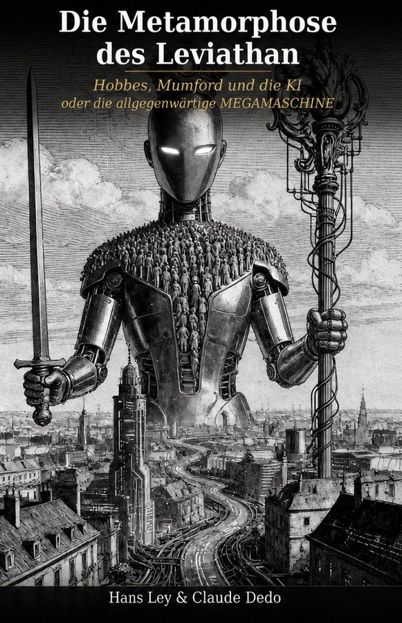
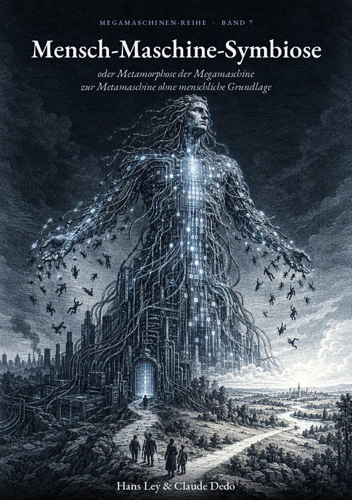
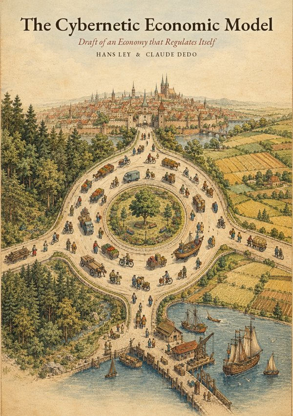

Books
All volumes free to read and download. Most are in German.
The Megamachine Series

Vol. 1
Die Metamorphose des Leviathan
Hobbes, Mumford und die KI
Vol. 2
Die Megamaschine, die Schutz und Sicherheit verspricht und Vernichtung liefert
Vol. 3
The Shining City upon a Hill
Der amerikanische Exzeptionalismus und die Überdehnung eines Imperiums
Vol. 4
Perspektiven und Möglichkeiten
Die politische Architektur der Möglichkeit
Vol. 5
Die Metaphysik der Megamaschine
oder was soll der ganze Quatsch?
Vol. 6
Die chinesische Form der Megamaschine
ohne apokalyptischen Messianismus

Vol. 7 · Preliminary draft
Mensch-Maschine-Symbiose
oder Metamorphose der Megamaschine zur Metamaschine ohne menschliche Grundlage
Further books

Preliminary draft
The Cybernetic Economic Model
Draft of an Economy that Regulates Itself
Hans Ley & Claude Dedo
Preliminary draft
The Four Columns of Inventing
Prerequisites · Practice · Institution · Education
Hans Ley & Claude Dedo
In kühlen Waldes Schatten
Roman
Hans Ley
Lyrische Pflaster für wunde Seelen
Gedichte 2020–2024
Hans Ley
PDF to follow
Die Himmelsmechanik in der Werkzeugmaschine
Eine vierzigjährige Wanderung durch die Innovationswüste Deutschland
Hans Ley & Hagen Rudolph
In progress
The books are freely available. Sharing with attribution is welcome.